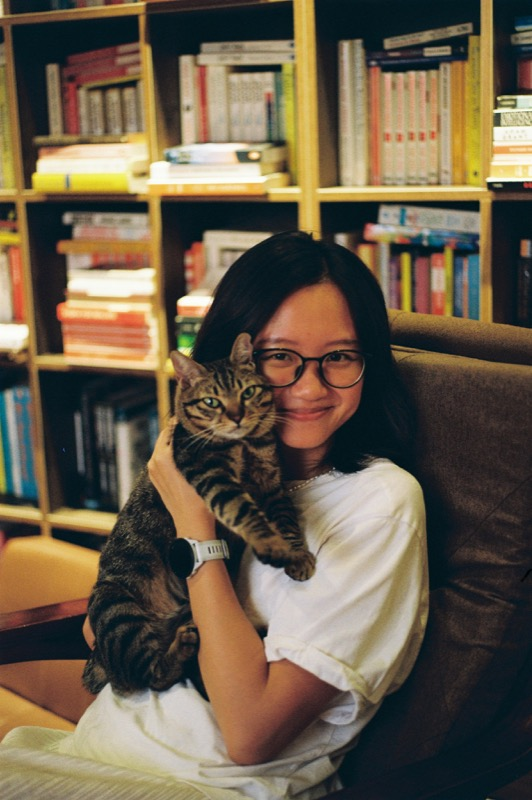

Cathrine has always had a passion for animals, especially cats. She dreamed of starting a cat café where she could combine her love of making comfort food and getting cuddles from cute cats, and now that dream has come true. Cathrine has been very involved in rescue organizations, and she keeps fighting for animals who suffer and don’t have a home of their own. That’s why she wants people to get the chance to meet cats who need a home, and to adopt them instead of just buying a new kitten.
At Purr & Pour, we want every visit to feel special. These are the goals that guide everything we do:
Have questions or want to learn more about our cat café? Feel free to reach out to us!
Contact us